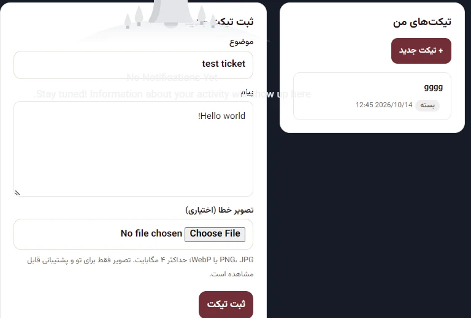
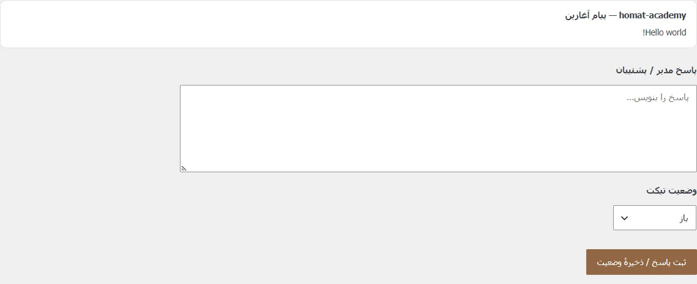

← بازگشت به پروژهها
وردپرس و PHP / آکادمی هومت
ساختهشده برای آدمهایی که از سایت استفاده میکنند.
پروژهٔ توسعهای برآمده از نیاز زبانآموز و مدیر سایت.

مطالعهٔ پروژهآکادمی هومتگفتوگو دربارهٔ پروژه ↗
01
چالش
یک پلتفرم آموزشی به پشتیبانی کاربردی، پرداخت ساده و محتوایی نیاز دارد که در زبان فارسی و روی موبایل درست کار کند.
02
نقش من
افزونههای اختصاصی وردپرس و قابلیتهای PHP، از جمله سامانهٔ تیکت Tutor LMS را توسعه دادم؛ تغییرات پرداخت ووکامرس، نمایش دورهها و فونت محلی را هم هدایت، یکپارچه و آزمایش کردم.
03
خروجی
قابلیتها آزمایش و روی سایت زنده منتشر شدند. بخشهای خصوصی پیشخوان را بدون انتشار دادهٔ هنرجویان توضیح دادهام.


منابع و لینکها